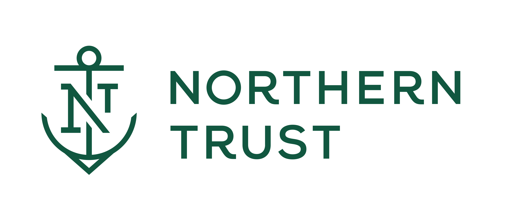
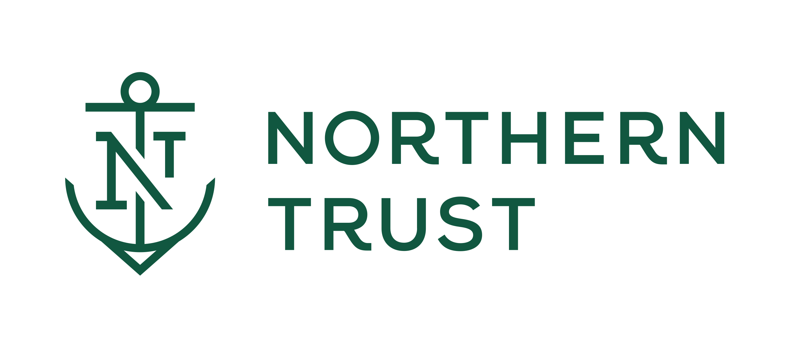

Founders
José Luis Caraveo III
Co‑founder, Osprey Intel LLC
 

Craig D'Cruz
Co‑founder & Registered Agent

Company Facts
Osprey Intel builds two core products for private capital investors: 1) Static Deep Dives, comprehensive decks covering six standard diligence modules, and 2) TalonStrike Micro-Apps, dynamic, clickable platforms that compress venture diligence from weeks to days.
- ✓ Formed in New Hampshire
- ✓ Formation Date: May 30, 2025
- ✓ Member Managed LLC
Flagship Engagements
Stealth-mode summer projects; a deep-dive project with Fall Line Capital; plus a two-sprint program with Superluminal Medicines and Broadview Ventures.
Who We Serve: Lean Private‑Capital Teams
Small–midsize VCs, PEs, and family offices that need deal screening capacity without adding headcount.
- Team size: 8–12 investment professionals
- AUM & checks: $50M+ AUM; $2M–$25M initial checks
- Focus: niche / frontier areas where ramp‑up is hard
- Stack: already paying for multiple data/AI tools—Osprey unifies and cites
Module 1: Private vs. Public Capital Market Needs
Explaining the critical workflow differences that TalonStrike is designed to solve for private capital investors.
Deal Sourcing Workflows
Private Capital: Relies on proprietary networks, thematic thesis mapping, and targeted inbound funnels. Information is fragmented and relationship-driven.
Public Capital: Driven by sell-side research, regulated filings (10-K, 8-K), and predictable earnings calendars. Information is structured and broadly available.
Deal Screening Workflows
Private Capital: Focuses on qualitative signals: thesis fit, team strength, product novelty, and early market validation. Requires synthesizing unstructured data.
Public Capital: Utilizes quantitative factor models, KPI screens (e.g., revenue growth, margins), and consensus estimates. Highly data-driven and automated.
Due Diligence Workflows
Private Capital: A mosaic-building exercise combining expert interviews, analysis of private datasets, competitive intelligence, and regulatory pathway assessment.
Public Capital: Centers on analyzing public filings, alternative data (e.g., credit card transactions, web traffic), and financial modeling based on consensus.
Decision Artifacts
Private Capital: The core deliverable is the Investment Committee (IC) memo—a narrative-driven document supported by a business development (BD) data pack.
Public Capital: The primary artifacts are detailed earnings models, valuation summaries, and research notes published to clients.
Module 2: Osprey Intel Overview + Timeline
Our origin, traction, and key milestones.
Spring 2025
Foundational First-Year Project (FYP) at Tuck
Project: "Tissue and Organ Engineering: Investor Sentiments and Analysis."
This project, acclaimed by faculty for its high quality and for which we earned top marks, analyzed VC investment trends in regenerative medicine. Workflows and concepts applied in the FYP became the basis for early brainstorming around the initial "Atlas Intel" concept. A white paper based on the deliverable has been submitted for publication to respected journals, including Regenerative Therapy and Cytotherapy.
May 30, 2025
Formation of Osprey Intel LLC
The venture was formally incorporated with the state of New Hampshire, evolving from its original name, "Atlas Intelligence".
Summer 2025
Stealth Summer Projects
Delivered flagship programs and deep dives for three key partners: Fall Line Capital, Superluminal Medicines, and Broadview Ventures.
August 18, 2025
Key Artifact Delivery
Shipped the Congenital Heart Disease (CHD) static deck and the Pediatric Pulmonary Valve (PPV) TalonStrike micro-app suite for Broadview Ventures.
Module 3: Consolidated Market Sizing (TAM/SAM/SOM)
Triangulating the opportunity with current PitchBook data and explicit assumptions. We show the project TAM for Deep Dives (by vertical deals) and the license SAM/SOM (lower‑bound teams proxy: trailing four‑quarter VC funds in North America).
Top‑Down (Beachhead Verticals)
- Healthtech VC deals: 2024: 849; H1'25: 414.
- Pharma biotools VC deals: 2024: 282; H1'25: 232.
- Attach rate (Deep Dive needed): 20–40% of deals.
- Per‑project price: $40k–$60k.
→ Project TAM (Healthtech + Biotools)
• 2024 actuals: $9.0M – $27.1M (base: $17.0M).
• 2025 run‑rate (H1×2): $10.3M – $31.0M (base: $19.4M).
Bottom‑Up (License)
- TTM VC funds (global): 1,379; NA share: 57.6% ⇒ ~794 teams.
- License price: $60k ARR per team.
- Adoption (SOM): 8–15% of teams over 24–36 months.
→ License SAM (NA lower bound): $47.6M ARR.
→ License SOM (@ 8–15%): $3.8M – $7.1M ARR.
ICP filter (40–60% of NA teams): ~318–476 teams ICP License SAM: $19.1M–$28.6M ARR ICP SOM (@8–15%): $1.5M–$4.3M ARR
PE Buyout Add‑ons (Big 7 public GPs)
TTM corporate PE deployment $83.10B (+65.3% YoY). We estimate add‑on diligence demand from this flow.
| Scenario | Add‑on $ (TTM) | Approx. Add‑on Deals | Dive Attach | PE Add‑on Project TAM |
|---|---|---|---|---|
| Conservative | $33.24B | 221 | 30% | $2.7M |
| Base | $41.55B | 415 | 40% | $8.3M |
| Aggressive | $49.86B | 664 | 60% | $23.9M |
Assumptions: add‑on share of deployment (40–60%), average equity per add‑on ($75–150M), attach rate (30–60%), Deep Dive price ($40–60k). Tunable per GP.
Executive Brief
Beachhead Deep Dives add a ~$19.4M opportunity at current run‑rate; PE add‑ons contribute ~$8.3M (base). Combined project TAM ≈ $27.7M (range $13.0M–$54.9M). The license SAM in NA is ~$47.6M with SOM of $3.8M–$7.1M ARR; for the ICP‑narrow segment, SAM is $19.1M–$28.6M and SOM is $1.5M–$4.3M.
Module 4: Competitive Landscape & WTP Anchors
Positioning TalonStrike against alternatives and providing provisional pricing anchors based on market research.
vs. Generalist CI platforms (e.g., AlphaSense, Tegus). We differ by focusing on the private capital *workflow* and delivering synthesized, decision-ready artifacts, not just a search tool.
vs. Life-science data providers (e.g., GlobalData, BCC). We differ by being technology-agnostic and integrating multiple licensed sources into a single, cohesive narrative with a clear "so what" for investors.
vs. DIY business intelligence tools and static PDFs. We offer a "done-for-you" service that is interactive, citable, and share-safe, eliminating the internal burden of data wrangling and slide creation.
Our unique wedge is **speed + citability**. We deliver clickable, auditable micro-apps that compress diligence, moving beyond static reports to provide a living, queryable asset for the investment team.
WTP Anchors (Provisional)
Ranges are under active market study.
- Project (per suite): $9k – $90k
- Annual License (Team): $45k – $75k/yr
- Annual License (Firm): $90k – $150k/yr
Module 5: Delivery, Governance & References
Our process for building and governing TalonStrike: citation-first, licensed-data only, and secure.
Process & SLAs
Our delivery follows a structured path: Intake → Scope → Build → QA (all citations checked) → Client Handoff → Refresh Cadence. We guarantee source trails for all external data.
Governance
We use only licensed data sources, ensuring compliance. All client deliverables are architected for secure sharing, with no PII/MNPI handled unless contractually required.
Module 6: Case Studies & Outcomes
Evidence of speed and decision utility from our flagship engagements. Click a card to view the detailed case study.
Broadview Ventures
Delivered a comprehensive CHD Deep Dive (static deck, dated 2025-08-18) and the full PPV TalonStrike suite. Each major component was completed in ≤1 week, demonstrating rapid turnaround.
View Case Study →Fall Line Capital
Developed sector-oriented research modules (stealth) precisely mapped to FLC's investment thesis and focus areas, showcasing our ability to align with specific fund strategies.
View Case Study →Superluminal Medicines
Conducted a GPCR competitor analysis (pro bono pilot) that validated our rapid-response capabilities for corporate business development and strategy teams.
View Case Study →Module 7: Technology & Methodology
Our hybrid approach combines a sophisticated, multi-model AI stack with proprietary data processing and governance to deliver fast, auditable, and decision-ready insights.
Multi-Model AI Stack
We leverage a suite of best-in-class Large Language Models (LLMs) as powerful research assistants to query, extract, and synthesize data from vast, unstructured sources.
Proprietary Data Ingestion
Our process begins with custom crawlers and scrapers (e.g., Scrapy) to gather public data, which is then processed by robust parsers (e.g., BeautifulSoup) that can handle diverse formats like HTML, PDFs, and JSON.
RAG & Source Embedding
We ground our AI in a curated "source of truth" (DOC_SET) containing licensed reports, PitchBook extracts, and client data. This corpus is embedded into a Retrieval-Augmented Generation (RAG) graph, ensuring our AI generates responses based on verifiable facts, not hallucinations.
Custom GPTs & Dual-Citation
We build specialized agents, like our "VC Associate GPT," on top of the RAG. Every claim generated is tied back to its origin through our unique Dual-Citation methodology, providing both the primary source and our internal notes for full transparency and auditability.